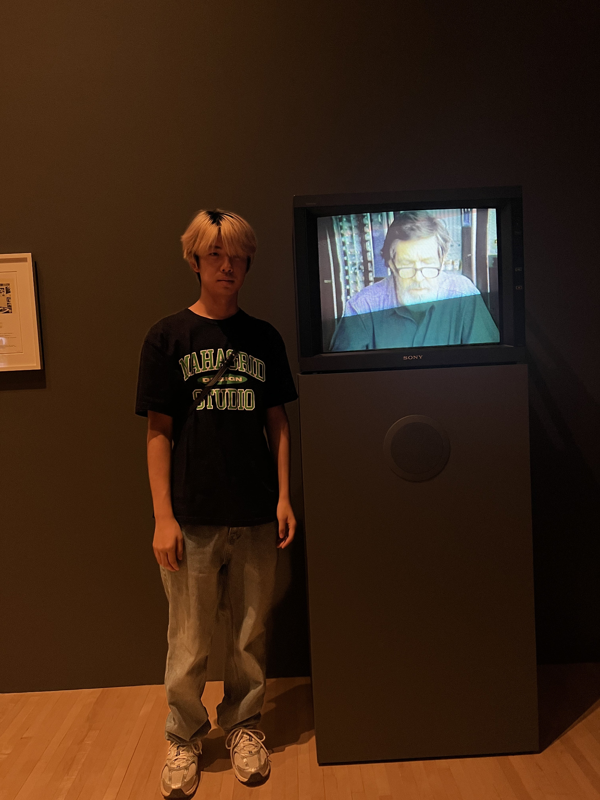

> open about.txt
hi, i'm allan.
a small place for the things i want to remember.

[01] / read me
This is my personal archive: photos, objects, sketches and music collected along the way.
Some things are finished. Some are just ideas on paper. I keep them here because I want to come back to them.
status: still collecting...
[02] / contents
[03] / credits
Personal sketchbook and design photos sit alongside collected visual references. Source links and credits appear inside each archive entry. Demo tickets are fictional keepsakes.
Website inspiration: claunicornios.com. Typography and paper direction: the supplied Sundae School references.
> end of file
[ return to my favourite archives ]